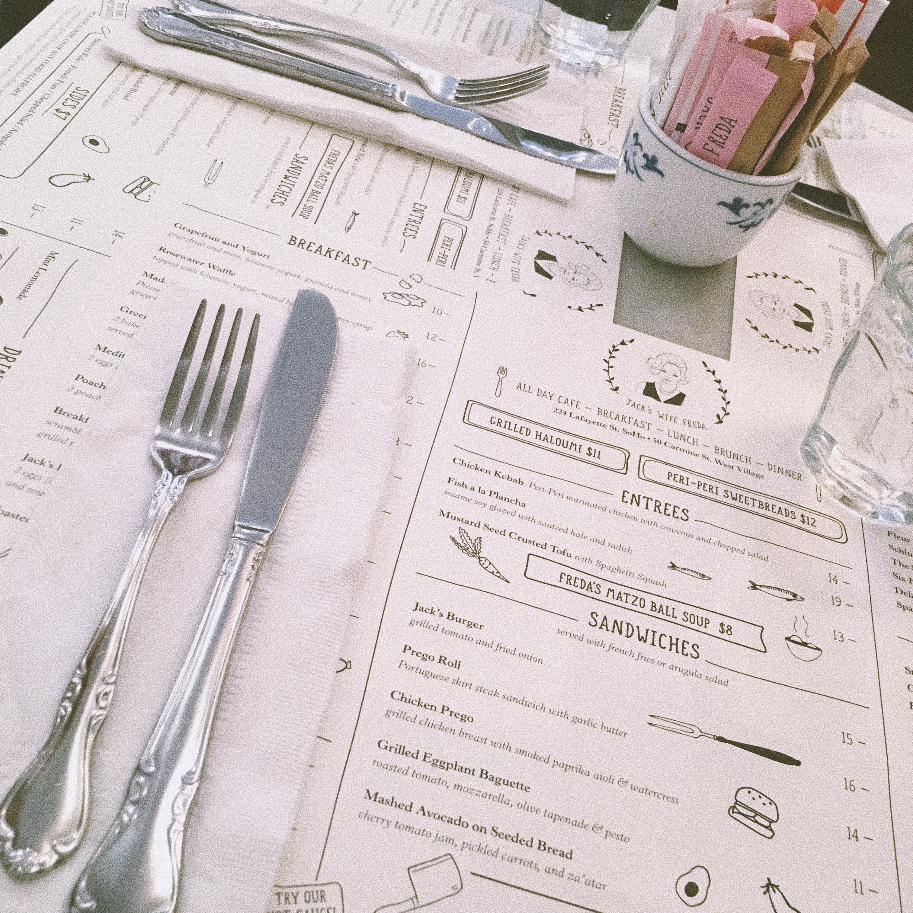
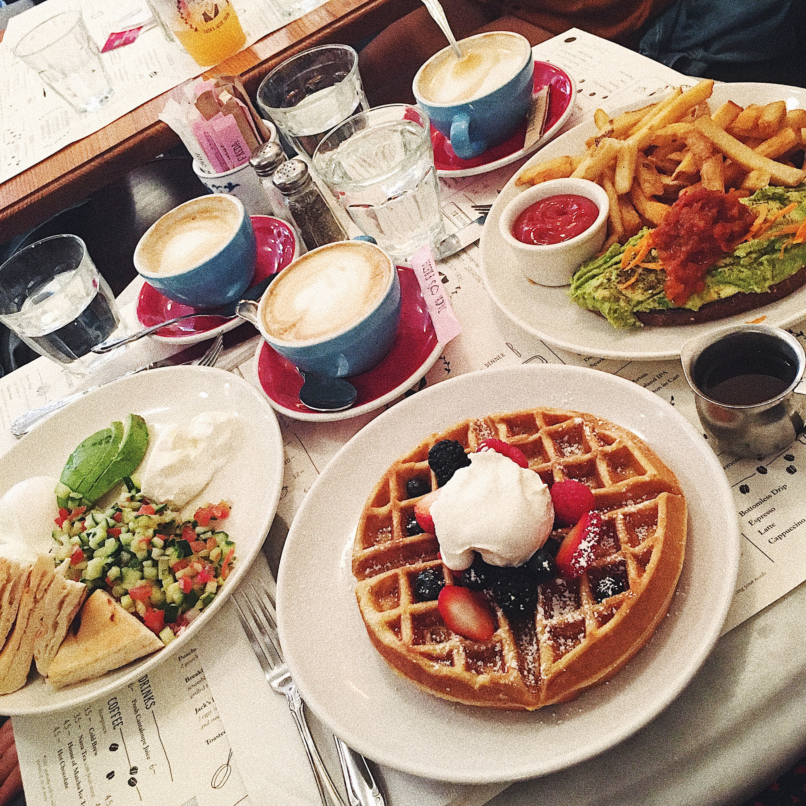
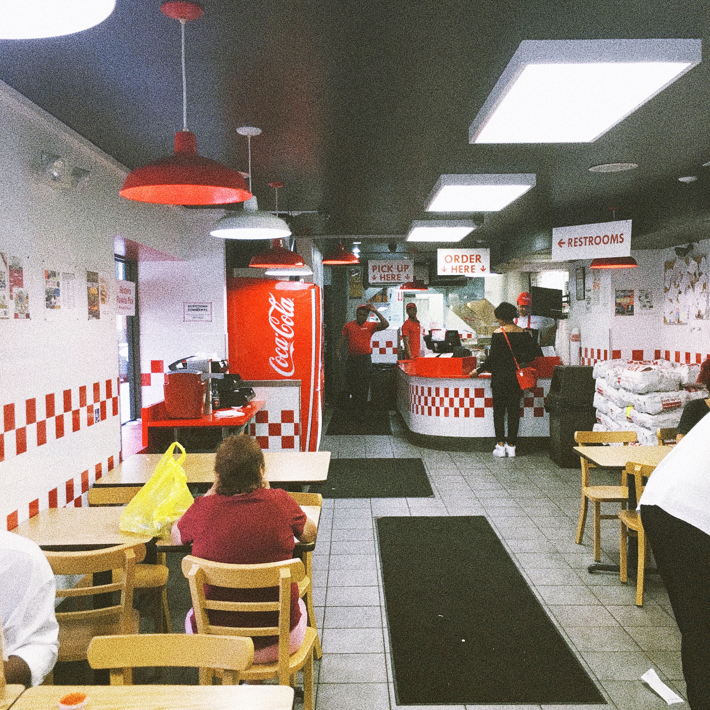
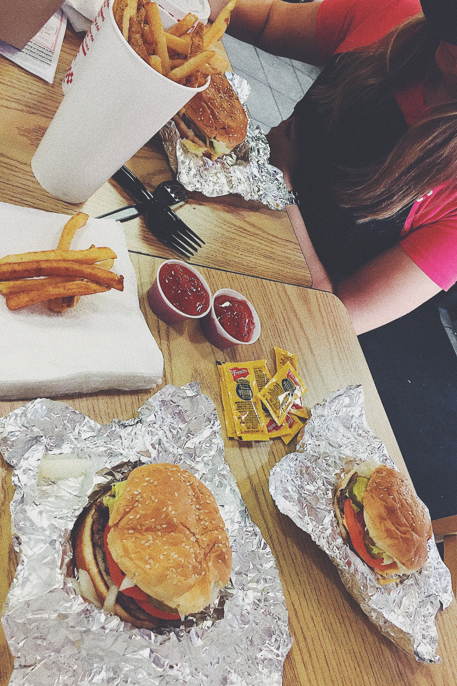
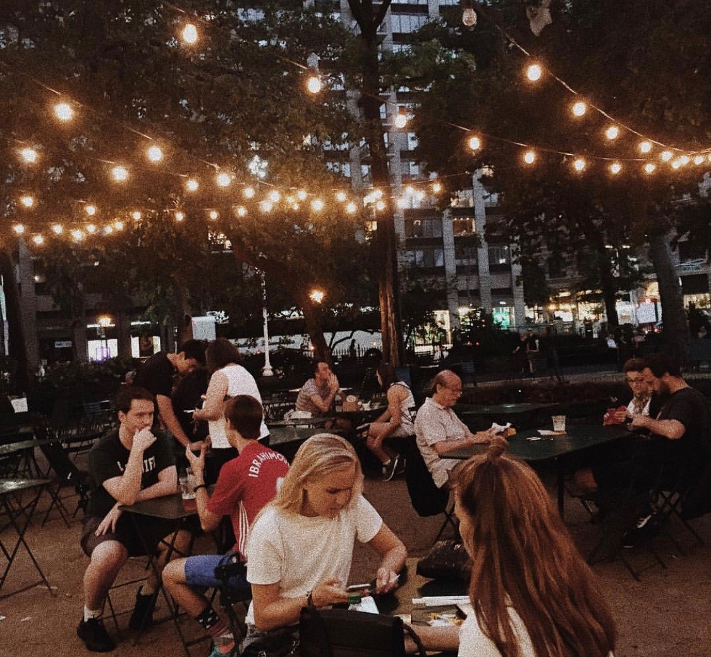
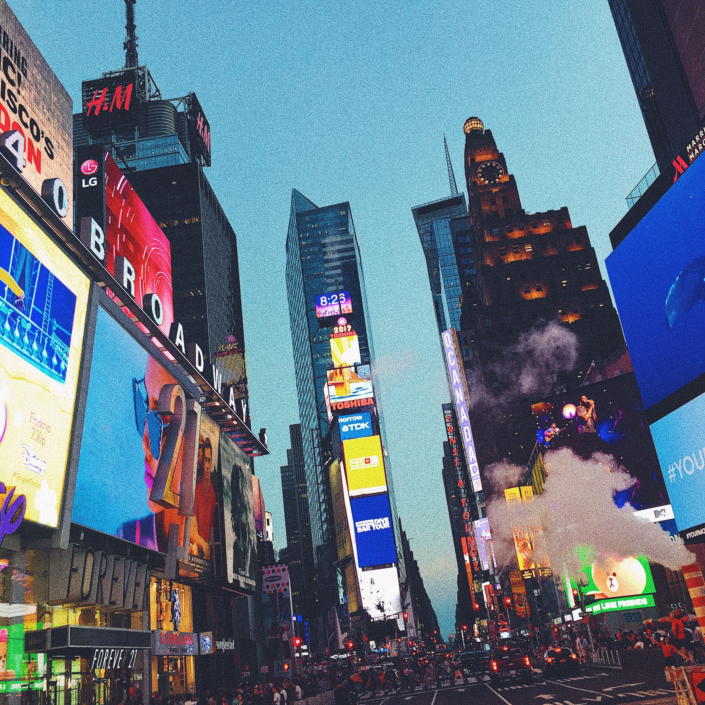
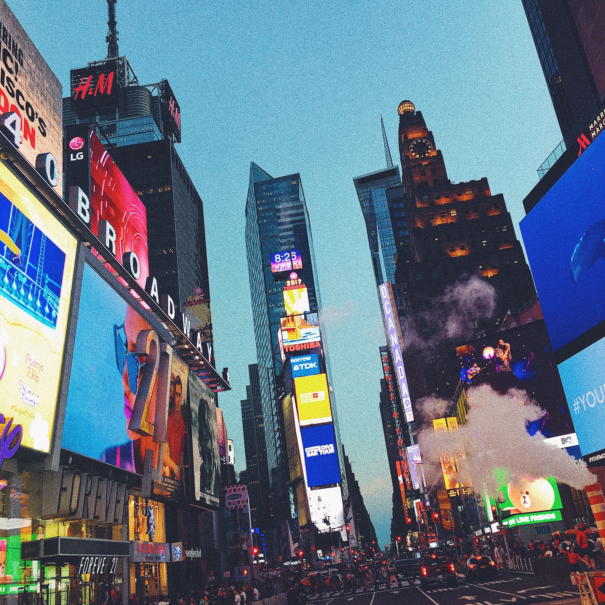
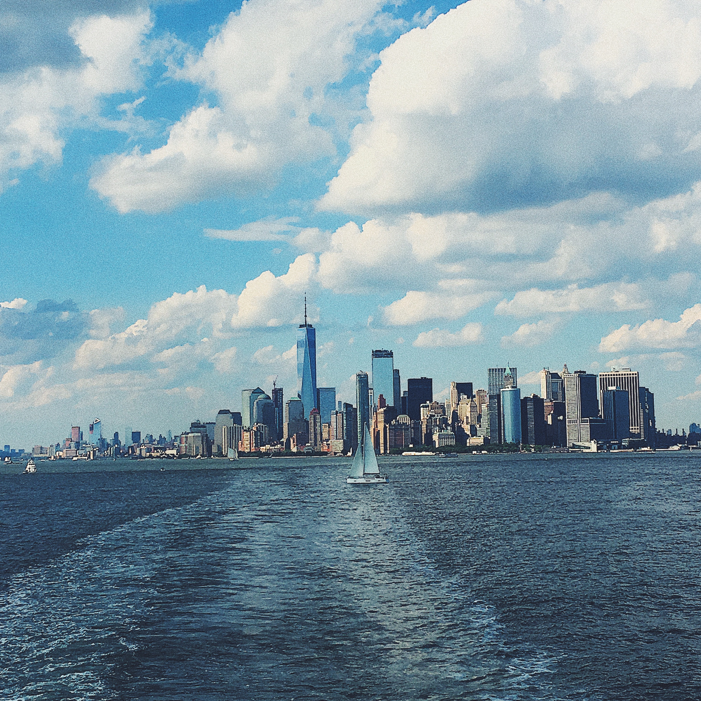

BON
VOYAGE
Jeg har samlet en lang list over ´good to know´ og anbefalinger til, hvad jeg mener, er et
´must see´ og hvilke restauranter der er værd at besøge under dit ophold i NYC.
Klik på navnene på stederne, for at komme ind på deres hjemmesider, så du kan se åbningstider, addresser osv.
Spisesteder


Denne restaurant havde jeg glædet mig meget til at besøge. Det er sådan en man har hørt meget om i de fleste NY-guides. Den er mest af alt nok kendt for at være en meget simpel og charmerende lille café i SoHo, og for at have ´instavenligt´ mad på menukortet.
Retterne herinde har et meget mellem-østligt præg, hvilket jeg egentlig synes ret godt om. Maden smagte også ganske udmærket, men det var ikke noget, vi ikke kunne have fået på en anden café lige i nærheden.
Så hvis du er til de meget små og charmerende caféer, og gerne vil poste et pænt billede på Instagram for at gøre dine venner jaloux, så er Jacks Wife Freda det perfekte sted. Men hvis du på udkig efter noget superlækkert mad, så er det nok ikke denne café du skal prioritere. Et godt tip er at komme her til brunch, og kom i god tid, da man kan risikere at stå i kø.


Den bedste burger til dato!
Five Guys er en burgerkæde, som også ligger flere steder i USA. Maden herinde kan man ikke ligefrem kalde fotogen, men det er snasket på den helt rigtige måde. Der er ikke så stort et udvalg på deres menukort, men du kan til gengæld få lov at sammensætte din egen burger med alt det lækreste tilbehør, uden at det koster ekstra.

Shake Shack er en fastfood-kæde, som ligger flere steder i New York. Herinde serverer de burgere, fritter og shakes. Og det smager fremragende! Jeg besøgte deres restaurant i Madison Square Park, hvilket er en virkelig hyggelig location. Det bedste tip jeg kan give herinde er, at du skal huske at købe en shake til din burger. Det lyder måske lidt kvalmende, men du vil ikke fortryde det!
Udsigtspunkter


Top of the Rock
Der er et utal af udsigtspunkter i New York. Det mest populære er i Empire State Building. Det er også det dyreste sted du kan vælge, så et super godt alternativ er ´Top of the Rock´, som ligger i Rockefeller Center.
Her får du den mest fantastiske udsigt ud over hele New York, inklusiv Empire State Buling lige foran dig. Og her kan du betale dig fra det.

Brooklyn Bridge
Brooklyn Bridge er nok den mest fotograferede bro i New York. Den er super smuk og udsigten fra selve broen og ind over Manhatten, er også fantastisk. Jeg vil klart anbefale at man tager på en gåtur hen over broen. Og så er det helt gratis.
 

Time Square
Time Square er placeret i hjertet af Manhatten og det er stedet, hvor nogle af de mest kendte attraktioner i New York ligger placeret. Udover det, er det bare en kæmpe oplevelse at stå i midten af det gigantiske neonlysshow. Her kunne man stå og tage billeder i flere timer. Mit bedste tip er, at man skal tage herind om aftenen, for at få den bedste oplevelse.


Central Park
Tag et smut forbi Starbucks, køb en god kaffe og tag den med på en lang gåtur gennem Central Park. En gigantisk park med træer, søer, løbestier og store græsarealer, inde midt på Manhattan, hvilket er en meget speciel oplevelse. Igen en af de helt gratis fornøjelser i New York.

Staten Island Ferry
Hvis du gerne vil se frihudsgudinden helt tæt på, så vil jeg anbefale at tage en tur med Staten Island Ferry, som helt gratis bringer en tæt på Frihedsgudinden og Ellis Island, og så får du oven i købet en fantastisk udsigt til Lower Manhattan.


The High Line
En anden ting man bør tage op og se, er The High Line, som er en nedlagt jernbane på vest Manhattan, og som nu er blevet ombygget til en lang, offentligt park, hvor man kan gå og se ned på de trafikerede veje og bare nyde den smukke udsigt.